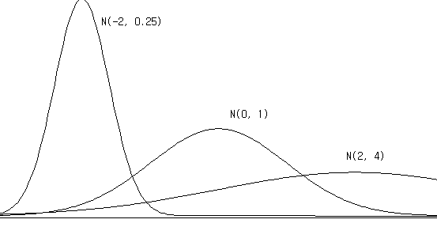
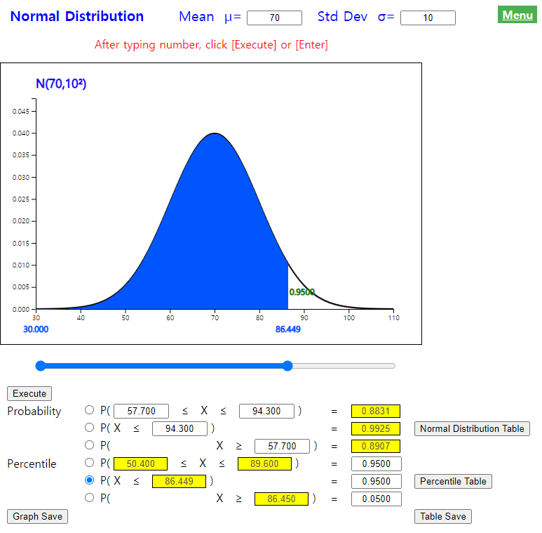

Chapter 5. Probability Distribution
5.4.1 Normal Distribution
[presentation] [video]

<Figure 5.4.6> Simulation of data which follow a Normal distribution with mean 0 and variance 1 using 『eStatU』
|
A normal distribution function or a Gaussian distribution function is as follows. $$ f(x) = \frac{1}{\sqrt{2 π} \, \sigma } exp \{ - \frac {(x-\mu)^2 } {2 \sigma^2} \} $$ This distribution function has two parameters μ and σ, each representing the mean and standard deviation of the normal distribution.

Characteristics of the normal distribution can be summarized as following.
Probability Calculation of the Normal Distribution

Mathematically, this area must be obtained with the following definite integral over \( (a,b) \), but it is impossible to calculate by hand and can only be calculated using a computer. $$ P(a \lt X \lt b)= \int_{a} ^{b} {} \frac{1}{\sqrt{2 π} \, \sigma } exp \{ - \frac {(x-\mu)^2 } {2 \sigma^2} \}dx $$ If X is a normal random variable with the mean μ and variance \(\sigma^2\), a standardized random variable \(Z = \frac {X - \mu}{\sigma} \) is a normal random variable with the mean 0 and variance 1, i.e., \(Z ∼ N(0,1)\). This fact implies that, if we can find probabilities of all types of intervals in N(0,1) distribution, then we can also find probabilities of all types of intervals in \(N(\mu, \sigma^2 )\). Therefore, \(N(0,1)\) is called a standard normal distribution or simply \(\small Z\) distribution.
If \(X\) is a normal random variable with the mean μ and variance \(\sigma^2\), i.e. \(X ∼ N(\mu,\sigma^2) \), then the standardized random variable \(Z\), \( \frac{X-\mu}{\sigma} \) follows a Normal distribution with the mean 0 and variance 1, i.e. \( Z ∼ N(0,1) \)
|
Table 5.4.2 Standard normal distribution table by using 『eStatU』

|
In 『eStatU』, the calculation of probability \( P( a \lt X \lt b ) \) for the interval \((a , b)\) of any normal distribution \( N(\mu,\sigma^2) \) can be done as in <Figure 5.4.9>, and the percentile \(x\) for a given probability \(p\), which is \(P( X \lt x) = p\), can also be easily calculated. In 『eStatU』, the probability of any interval on [μ - 4σ, μ + 4σ ] can be calculated. The probability of \(P(Z \lt z)\) is near 0 if z is less than μ - 4σ and is 1 if z is greater than μ + 4σ. Table 5.4.3 shows percentiles of the standard normal distribution by using 『eStatU』.

<Figure 5.4.9> Normal probability calculation using 『eStatU』
|

1) \(\small P(Z \lt 1.96)\)
2) \(\small P(-1.96 \lt Z \lt 1.96)\)
3) \(\small P(Z \gt 1.96)\)
Answer
By using standard normal distribution table,
1) \(\small P(Z \lt 1.96)\) = 0.975.
2) \(\small P(-1.96 \lt Z \lt 1.96) = P(Z \lt 1.96) - P(Z \lt -1.96)\) = 0.975 - 0.025 = 0.95
3) \(\small P(Z \gt 1.96) = 1 - P(Z \lt 1.96)\) = 1 - 0.975 = 0.025
|
By using normal distribution module of 『eStatU』 (<Figure 5.4.9>),
1) Enter 1.96 on the second option below the graph, then click the [Execute] button. The answer is shown at the yellow box in the right hand side
2) Enter an interval from -1.96 and 1.96 on the first option below the graph, then click the [Execute] button.
3) Enter 1.96 on the third option below the graph, then click the [Execute] button. The answer is shown at the yellow box in the right hand side
|
Answer
By using percentile table of the standard normal distribution,
|
By using normal distribution module of 『eStatU』 (<Figure 5.4.9>),
1) Enter \(p =\) 0.90 at the right box of the fifth option below the graph, then click the [Execute] button. It shows that the exact 90 percentile is 1.282 at the yellow box.
2) Enter \(p =\) 0.99 at the right box of the fourth option below the graph, then click the [Execute] button. You can see that the exact two-sided value is –2.576 and 2.576 at the yellow boxes .
3) Enter \(p =\) 0.05 at the right box of the sixth option below the graph, then click the [Execute] button. It shows that the right 5 percentile is 1.645 at the yellow box.
|
|
Practice 5.4.1
When \(\small Z\) is a standard normal random variable, find following probabilities using 『eStatU』.
1) Calculate the probability that \(\small Z\) is beween 0 and 1.5.
2) Calculate the probability that \(\small Z\) is between –1.5 and 0.
3) \(\small P(Z \lt -1.5)\)
4) \(\small P(Z \gt 1.5)\)
5) \(\small P(Z \gt -1.5)\)
6) \(\small P(Z \lt 1.5)\)
7) \(\small P(-1.5 \lt Z \lt 1.5)\)
|
|
Practice 5.4.2
When Z is a standard normal random variable, find x that satisfies the following formula using 『eStatU』.
1) \(\small P(Z \lt x)\) = 0.80
2) \(\small P(-x \lt Z \lt x)\) = 0.80
3) \(\small P(Z \gt x)\) = 0.80
|


i.e., \(P(-1.96 \lt Z \lt 1.96)\) = 0.95, \(P(-2.575 \lt Z \lt 2.575)\) = 0.99
When \(X\) is a normal random variable with a mean μ and variance \(\sigma^2\), \(Z = \frac{X-\mu}{\sigma}\) follows the standard normal distribution. Therefore, the probability \(P( a \lt X \lt b ) \) of the interval \( (a,b) \) of \(X\) is as follows: $$ P( a \lt X \lt b ) = P( \frac {a - \mu}{\sigma} \lt Z \lt \frac {b - \mu}{\sigma} ) $$
1) \(\small P(X \lt 94.3) \)
2) \(\small P(X \gt 57.7) \)
3) \(\small P(57.7 \lt X \lt 94.3) \)
Answer
By using transformation to the standardized normal random variable, probability calculations are as follows:
1) \(\small P (X \lt 94.3) = P( \frac {X - 70}{10} \lt \frac {94.3 - 70}{10} ) = P( Z \lt 2.43) = 0.9925 \)
2) \(\small P (X \gt 57.7) = P( \frac {X - 70}{10} \gt \frac {57.7 - 70}{10} ) = P( Z \gt -1.23 = 0.8907\)
3) \(\small P (57.7 \lt X \lt 94.3) = P( \frac {57.7 - 70}{10} \lt \frac {X - 70}{10} \lt \frac {94.3 - 70}{10} ) = P(-1.23 \lt Z \lt 2.43 ) = 0.8832 \)
By using 『eStatU』, to obtain a probability of the normal distribution , enter the mean as 70 and the standard deviation as 10 at the top of the screen as <Figure 5.4.12>.

<Figure 5.4.12> Probability calculation of \( N(70,10^2 )\) distribution
|
1) What is the 95% percentile of the mid-term test scores?
2) What is the 95% percentile of two-sided type of the mid-term scores?
Answer
By using normal probability table, percentile calculations are as follows:
By using 『eStatU』, to obtain the probability of normal distribution , enter the mean as 70 and the standard deviation as 10 at the top of the screen as <Figure 5.4.13>.
|

<Figure 5.4.13> Percentile calculation of \( N(70,10^2 )\) distribution
|
|
Practice 5.4.3
The length of time a customer waits to receive a service at a bank follows a normal distribution with an average of 5 minutes and standard deviation of 1 minute. Calculate the following probability using 『eStatU』.
1) The probability that a customer waits between 2 and 3 minutes.
2) The probability that a customer will wait less than 1 minute.
3) The probability that a customer waits at least 7 minutes to receive a service.
|
|
Practice 5.4.4
If total scores earned by students in a Statistics course follow a normal distribution with the average of 75 points and standard deviation of 10, find the following scores using 『eStatU』.
1) Top 10% of the scores that will get A grade. What is the minimum score to get A grade?
2) Top 30% to 10% of the scores will get B grade. What is the score range to get B grade?
|
Normal Approximation of Binomial Distribution
Answer
If the number of defective products is \(\small X\), \(\small X\) is a binomial distribution with \(n = 100, p = 0.05\). When \(n\) is this large, we calculate the probability approximately using normal distribution. Since the mean of this binomial distribution is \(np\) = 100 × 0.05 = 5, and the variance is \(np(1-p)\) = 100 × 0.05 x (1-0.05) = 4.75, we use the normal distribution \(\small N(5, 4.75)\) to calculate the probability approximately as follows.
1) \( \small P( X \lt 2) = P( Z \lt \frac{2-5}{\sqrt{4.75}} ) = P(Z \lt -1.376) = 0.0845 \)
2) \( \small P( 3 \lt X \lt 7) = P( \frac{3-5}{\sqrt{4.75}} \lt Z \lt \frac{7-5}{\sqrt{4.75}} ) = P( -0.918 \lt Z \lt 0.918) = 0.642 \)
Multiple Choice Exercise
*** Choose one answer and click [Submit] button
5.29 According to the nature of the normal distribution, what is the probability of taking a value between μ ± 3σ
5.30 There was a job test and the distribution of its scores is normal with the mean of 400 and standard deviation of 50. Scores between 450 and 500 are said to be suitable for the job. What percentage of scores do you think is appropriate for the job?
5.31 Using the standard normal distribution table (\( -∞ < Z < z )\) below, what is the probability of \(P(-0.41 \le Z \le 2.21)\)?
| \(\small Z\) | 0 | 1 |
| 0.4 | 0.6554 | 0.6591 |
| 2.2 | 0.9861 | 0.9864 |